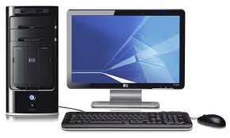

Зазвичай до основних складових персонального комп’ютера відносять:системний блок, монітор, клавіатуру, мишу.
Але існують і інші пристрої, допоміжні.Ці всі пристрої об’єднуються в групи: пристрої введення та виведення, а ще існують пристрої обробки та зберігання даних.